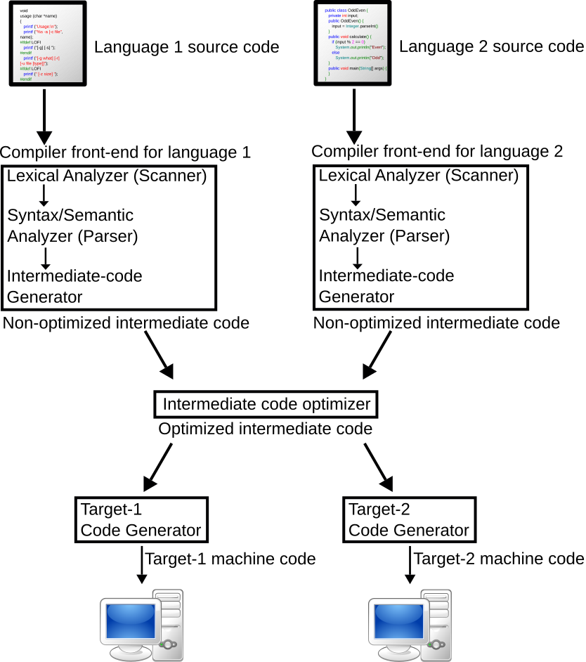

도입 — 왜 컴파일러는 여러 단계를 거치는가
소스코드가 기계어가 되기까지, 그리고 '컴파일러 동물원' 문제.
소스코드에서 기계어까지: 한 번에 번역하지 않는다
우리가 짠 프로그램이 CPU나 가속기 위에서 실제로 돈다는 것은, 사람이 읽는 소스코드(C, Swift, Python, 혹은 ML 모델 그래프)가 결국 기계가 실행하는 명령(x86/Arm 기계어, GPU SASS, NPU 마이크로코드)으로 번역된다는 뜻이다. 직관적으로는 "번역기 하나가 소스를 받아 기계어를 뱉는다"고 생각하기 쉽다. 하지만 실제 컴파일러는 거의 항상 그렇게 한 번에 번역하지 않는다. 소스코드와 기계어 사이에 여러 개의 중간 표현(IR, Intermediate Representation) 을 차례로 거친다.
IR(Intermediate Representation) 한 줄 정의: 소스도 아니고 최종 기계어도 아닌, 컴파일러 내부에서 프로그램을 들고 다니는 중간 형태의 표현. 컴파일러는 소스를 일단 IR로 옮긴 뒤, IR 위에서 분석하고 최적화하고, 그 IR을 점점 더 낮은(기계에 가까운) IR로 바꿔 가다가 마지막에 기계어를 낸다.
왜 굳이 중간 단계를 둘까. 하드웨어 쪽 비유가 가장 잘 맞는다. 여러분이 ISA(Instruction Set Architecture)를 아는 것과 같은 이유다.
IR은 단계 사이의 "계약"이다 — ISA 비유

ISA는 소프트웨어와 하드웨어 사이의 계약(contract) 이다. 컴파일러는 "이 명령 집합만 쓰겠다"고 약속하고, CPU 설계자는 "그 명령은 이렇게 동작하도록 만들겠다"고 약속한다. 이 계약 덕분에 양쪽이 독립적으로 진화할 수 있다 — 같은 x86 바이너리가 세대가 다른 칩에서 돌고, 칩 내부 마이크로아키텍처는 완전히 갈아엎어도 된다.
IR은 컴파일러 내부에서 정확히 같은 역할을 한다. IR은 컴파일러의 한 단계와 다음 단계 사이의 계약이다. 이 계약이 있어서 컴파일러는 세 가지를 얻는다.
- 분석(analysis): IR은 사람이 보기 좋으라고 만든 게 아니라 기계가 추론하기 좋으라고 만든 형태다. 예컨대 SSA(Static Single Assignment) 형태 — 모든 변수에 값이 딱 한 번만 대입되는 IR 형식 — 는 "이 값이 어디서 와서 어디로 흘러가는가"를 기계적으로 따라가기 쉽게 해 준다.
- 최적화(optimization): 죽은 코드 제거, 공통식 제거, 루프 변환 같은 변환을 IR 위에서 수행한다. 같은 최적화 패스를 여러 입력 언어가 공유할 수 있다.
- 이식성(portability): 입력 언어가 $N$개, 타깃 하드웨어가 $M$개라도, 가운데 공통 IR을 두면 $N\times M$개의 번역기를 따로 만들 필요가 없다 — 앞단(언어→IR) $N$개와 뒷단(IR→기계어) $M$개만 있으면 된다. 이것이 LLVM이 한 세대를 풍미한 핵심 아이디어다.
여기까지는 좋다. 그런데 어떤 추상화 수준의 IR 을 쓸 것이냐가 다음 문제를 만든다.
하나의 IR로는 부족하다 — premature lowering
LLVM IR은 대략 "벡터가 붙은 C(C with vectors)" 수준의 단일 추상화 레벨(single abstraction level) 표현이다 [2]. 스칼라·포인터·기본 제어흐름을 다루는 데는 탁월하다. 하지만 그보다 높은 의미(이건 행렬 곱이다, 이건 7중 루프 둥지다, 이 텐서의 메모리 레이아웃은 이렇다)는 LLVM IR로 내려오는 순간 사라진다.
문제는 고수준 의미가 너무 일찍 사라지면, 정작 그 의미가 필요한 최적화가 정보를 복원하느라 고생한다는 점이다. 논문은 이 복원을 fragile·expensive·invasive(깨지기 쉽고, 비싸고, 침습적)하다고 못 박는다 [2 §I]. 이 직관은 뒤에서 MLIR 설계 철학(세 번째 원칙 Progressivity)으로 이어진다. 핵심은 premature lowering(성급한 하강) — 의미를 필요 이상으로 빨리 낮은 추상으로 떨어뜨리는 것이 컴파일러의 근본 골칫거리라는 것이다 [1][2].
그래서 현실의 컴파일러는 IR을 여러 단계로 둔다. 높은 추상에서 분석·최적화를 하고, 거기서 정보를 다 쓴 뒤에 한 단계 낮추고, 또 낮추고… 기계어에 도달할 때까지. 이 "한 단계 한 단계 낮춘다"가 바로 다단계 IR이고, 도입부의 "왜 여러 단계를 거치는가"에 대한 1차 답이다.
진짜 문제: 컴파일러 동물원(fragmentation)
여기서 산업 전체로 시야를 넓히면 더 큰 문제가 보인다. 단계가 여러 개 필요하다는 것까지는 모두가 동의했다. 그런데 각 진영이 그 단계들을 처음부터 따로 다시 만들었다.
- Swift, Rust, Julia, Fortran은 저마다 자기만의 고수준 IR 을 만들었다 [2].
- TensorFlow, PyTorch, JAX 같은 ML 프레임워크들도 저마다 자기 "ML graph" 표현을 만들었다 [2].
- 각 IR마다 그 위에서 도는 분석·최적화 패스, 검증기, 직렬화 포맷, 디버깅 도구를 또 따로 만들었다.
저자들(Lattner 외)은 이것을 산업적 fragmentation(파편화) 으로 진단한다 — 인프라와 도메인 지식이 팀 단위로 갇히는 현상이다 [2 §I]. 비유하자면, 모든 동물원이 사자 우리를 짓는 노하우를 옆 동물원과 공유하지 못하고 매번 맨바닥에서 다시 설계하는 셈이다.
이 파편화를 가속시킨 것이 하드웨어 쪽 흐름이다. 무어의 법칙 둔화 이후 성능은 범용 CPU 한 종류에서 나오지 않고, GPU·TPU·NPU 같은 도메인 특화 가속기(DSA, Domain-Specific Architecture) 의 폭증에서 나온다 [3]. 가속기는 저마다 자기만의 코드 생성, 자원 모델, 메모리 계층을 요구한다 [2 §I]. 새 가속기가 하나 나올 때마다 위의 중복이 한 겹씩 더 쌓인다.
사용자가 실제로 겪는 증상
이 파편화는 추상적인 엔지니어링 미감의 문제가 아니다. 논문은 그 결과가 사용자에게 직접 보이는 결함으로 나타난다고 못 박는다. 파편화는 곧 [2 §I]:
"poor error messages, failures in edge cases, unpredictable performance, and difficulty generalizing the stack to support new hardware"
즉 (1) 알아먹기 힘든 에러 메시지, (2) 흔치 않은 경우(edge case)에서의 실패, (3) 예측 불가능한 성능, 그리고 (4) 새 하드웨어로 스택을 일반화하기 어려움. 서버 SW를 다뤄 봤거나 새 가속기를 올려 본 분이라면 (3)과 (4)는 익숙한 통증일 것이다 — "왜 이 모델은 이 칩에서만 느리지?", "이 연산자 하나 새 NPU에 올리려고 스택 전체를 건드려야 하나?"
저자들은 경제적 결론까지 솔직하게 적는다 [2 §I.B]:
"we could not afford to implement N improved compiler instances, we decided to go for a more general solution: investing in a high quality infrastructure"
N개의 개선된 컴파일러를 각각 다시 구현할 여력이 없었기에, 더 일반적인 해법 — 즉 고품질 인프라 하나에 투자하는 것 — 을 택했다는 것이다. 이 한 문장이 다음 섹션부터 펼쳐질 이야기, MLIR의 출발점이다.
이 섹션이 심는 질문
정리하면, 도입의 메시지는 이렇다. 컴파일러가 여러 IR 단계를 거치는 데는 정당한 이유(분석·최적화·이식성, 그리고 premature lowering 회피)가 있다. 그런데 그 단계들을 모두가 따로따로 다시 만들면서, "하나의 IR로는 부족하다"는 옳은 직관이 "그러니 각자 자기 컴파일러 동물원을 짓자"는 잘못된 결과로 굳어졌다.
여기서 자연스러운 질문이 나온다 — 하나의 진정한 IR(one true IR) 은 없을지 몰라도, 하나의 진정한 IR 인프라(one true IR infrastructure) 는 가능하지 않을까? 이 질문에 대한 답이 MLIR이고, 그 답의 구체적 형태(세 가지 설계 원칙, dialect, progressive lowering)는 다음 섹션부터 다룬다.
오늘 발표 흐름(Agenda)
- 도입 — 왜 여러 IR 단계인가, 그리고 컴파일러 동물원 문제 (지금 여기)
- MLIR이란 무엇인가 — "하나의 진정한 IR 인프라"라는 답, 세 가지 설계 원칙
- 핵심 구성요소 — Operation / Dialect / Region·Block, 그리고 progressive lowering
- Affine·Polyhedral — 루프 둥지를 수학으로 다루기 (인터랙티브 애니메이션과 함께)
- 실제 활용 — StableHLO 등 ML 프레임워크 진입, 가속기 백엔드, 산업 채택
- 정리·논의 — MLIR이 연 것, 그리고 남은 과제
참고문헌
[1] Lattner et al., "MLIR: A Compiler Infrastructure for the End of Moore's Law", arXiv:2002.11054, 2020.
[2] Lattner et al., "MLIR: Scaling Compiler Infrastructure for Domain Specific Computation", IEEE/ACM CGO 2021. doi:10.1109/CGO51591.2021.9370308
[3] J. L. Hennessy, D. A. Patterson, "A New Golden Age for Computer Architecture", CACM 62(2), 2019.